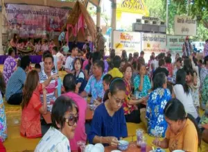

ประเพณี การเลี้ยงข้าวแช่

ประเพณีการเลี้ยงข้าวแช่ในจังหวัดนครสวรรค์เป็นหนึ่งในประเพณีที่มีความสำคัญและเป็นเอกลักษณ์
ซึ่งสะท้อนถึงวัฒนธรรมการดำรงชีวิตของคนในท้องถิ่น
โดยมักจัดขึ้นในช่วงเทศกาลสงกรานต์
เพื่อเฉลิมฉลองและสร้างความสัมพันธ์ในครอบครัวและชุมชน
ลักษณะสำคัญของประเพณีการเลี้ยงข้าวแช่ในนครสวรรค์:
1. ความหมาย:
🔥 ข้าวแช่ถือเป็นอาหารที่ทำขึ้นเพื่อคลายร้อน โดยมีการแช่ข้าวในน้ำเย็นและเสิร์ฟพร้อมกับเครื่องเคียงที่หลากหลาย เช่น ปลาเค็ม, กุ้งแห้ง, ผักสด และพริก
2. การเตรียมอาหาร:
🍀 ในช่วงเทศกาลสงกรานต์ ชุมชนจะมีการเตรียมข้าวแช่ โดยมีการทำข้าวสวยและแช่ในน้ำเย็น โดยมักจะมีการเตรียมเครื่องเคียงหลายอย่างเพื่อเสริมรสชาติ
3. พิธีกรรม:
🍿 ประเพณีการเลี้ยงข้าวแช่มักจะมีการทำบุญตักบาตร และการเชิญชวนญาติพี่น้องมาร่วมกินข้าวแช่ เพื่อเฉลิมฉลองเทศกาลและสร้างความสัมพันธ์ในครอบครัว
4. การรดน้ำดำหัว:
🥓 ในวันจัดงาน ผู้คนมักจะมีการรดน้ำดำหัวผู้สูงอายุ เพื่อเป็นการแสดงความเคารพและขอพรจากผู้ใหญ่ในครอบครัว ซึ่งเป็นการสืบสานประเพณีที่สำคัญ
5. กิจกรรมในงาน:
🍪 นอกจากการเลี้ยงข้าวแช่แล้ว ยังมีการจัดกิจกรรมต่าง ๆ เพื่อความสนุกสนาน เช่น การละเล่นพื้นบ้าน การแสดงดนตรีพื้นเมือง และกิจกรรมอื่น ๆ ที่ส่งเสริมวัฒนธรรมท้องถิ่น
6. ความสนุกสนานและความอบอุ่น:
🥨 งานเลี้ยงข้าวแช่สร้างบรรยากาศที่อบอุ่นและความสนุกสนานให้กับทุกคน โดยเฉพาะการรวมตัวกันของสมาชิกในครอบครัวและชุมชน